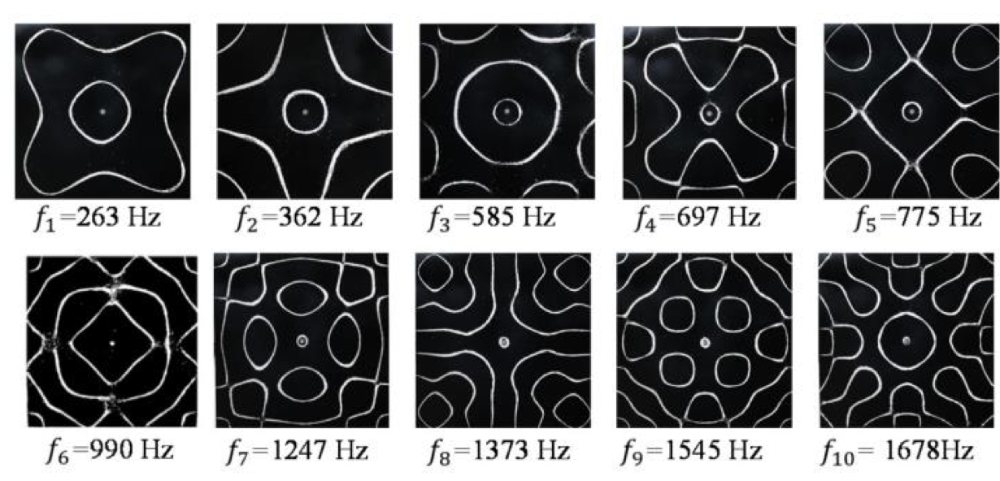

Title: Chladni Plate Simulation

Summary: This project aims to develop a digital simulation of Chladni Plate patterns. These patterns are created by scattering sand on a vibrating plate, revealing the plate's nodal lines when the plate vibrates at a resonant frequency. Our simulation will use sound wave physics and the wave equation to mimic this phenomenon.
Team Members: Shivan Patel, Dhruv Chowdhary, Nellie Mullane, Alejandro Dominguez
Problem Description
Chladni plates visually represent sound wave principles through sand patterns. Our goal is to create a digital simulation that explores the way sound frequency physically affects sand particles on a plate through interactive experimentation.
Goals and Deliverables
Planned Deliverables:
- A simulation where users can adjust frequency and amplitude to create different Chladni patterns.
- An interactive demo that visually displays the corresponding nodal lines as they would appear on a physical Chladni plate.
- The quality and performance of the simulation will be measured by its accuracy in reproducing known Chladni figures.
Reach Deliverables:
If ahead of schedule, we hope to implement a feature that allows users to upload and play their own sounds or music to see how different audio inputs affect the patterns formed.
Schedule
Week 1: Research phase - gather resources on Chladni patterns and simulation techniques.
Week 2: Development phase I - begin coding the basic simulation environment (modeling the plate, vibrations, and particles).
Week 3: Development phase II - features and pattern generation logic.
Week 4: Testing & presentation - test edge cases, refine the simulation, and prepare the final presentation. If time permits, implement user interface .
Resources
References:
- https://www.et.byu.edu/~vps/ME505/AAEM/V10-14.pdf
- https://www.youtube.com/watch?v=1yaqUI4b974
- https://scholarscompass.vcu.edu/cgi/viewcontent.cgi?article=1098&context=jmsce_vamsc
- https://research.uca.ac.uk/5836/1/Chladni_Plate_Visualisation_September_2022.pdf
- https://uwaterloo.ca/computational-mathematics/sites/ca.computational-mathematics/files/uploads/files/linqi_shao_report_pdf.pdf
- https://paulbourke.net/geometry/chladni/
Computing Resources:
We will use CGL for graphics rendering. Development will occur on personal computers.
Image References: